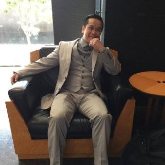

Hoang Tran
Location: Littleton, CO
email: h.demiurge@gmail.com
Ph: 316-285-5145


Location: Littleton, CO
email: h.demiurge@gmail.com
Ph: 316-285-5145


Deadline driven editor, writer and artist with over a decade of experience. Adaptive and versatile expert at producing content for a variety of platforms. Ready to bring skills to explore new collaborative and creative environments.
Advantage Informatics
Website - https://www.advantageinformatics.com/
Outreach Director, Interview Department - 2021 to 2023
Editorial Intake Manager - 2018 to 2021
Assignment Editor - 2016 to 2018
Freelance Journalist
2015 to Present
Alpine Start Production
website: https://www.facebook.com/alpinestartproductions/
Script Supervisor and Producer - 2015 to Present
Bachelor of Arts in English with Creative Writing Emphasis, University of Kansas. 3.5 GPA.
Writing, Editing, Journalism, Management, Training, Content Strategies and Development, SEO, HTML, Chat GPT, GPTZero, DALL-E, Midjourney, Tome, Press Releases, Newspaper, Radio Editing, Video Editing, Audio Editing, Stable Diffusion, Film and TV Script development, Story Pitching, News Coverage, Google Docs, MS Office, AP Style, MLA Style, APA Style, Final Draft, Photoshop, WordPress, CMS.